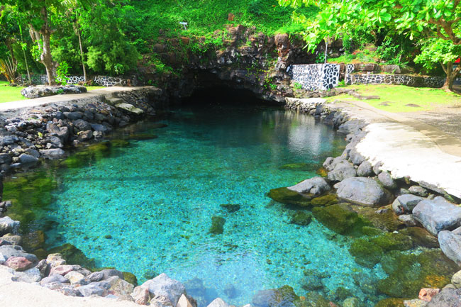

Stop 3: Piula Cave Pool
Piula Cave Pool is a beautiful freshwater swimming spot on Upolu. The clear water is found beneath a cave near the historic Piula Theological College. It is a peaceful place to enjoy Samoa's natural beauty.

A Photo Tour of the Beautiful Islands of Samoa
Piula Cave Pool is a beautiful freshwater swimming spot on Upolu. The clear water is found beneath a cave near the historic Piula Theological College. It is a peaceful place to enjoy Samoa's natural beauty.
